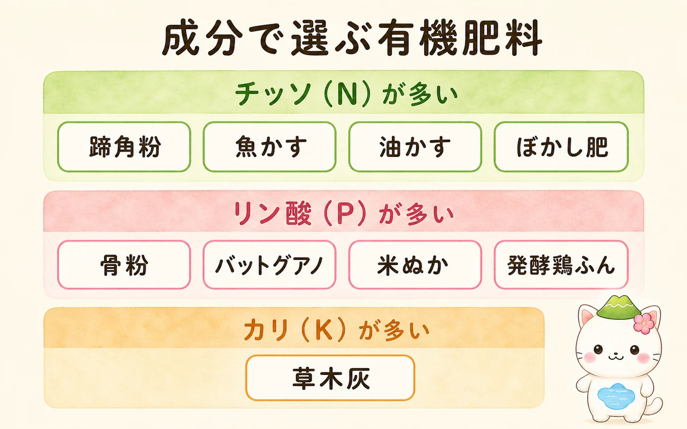
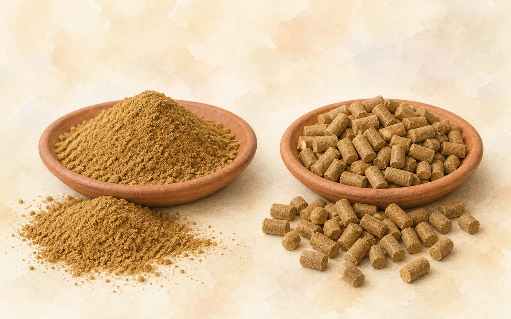
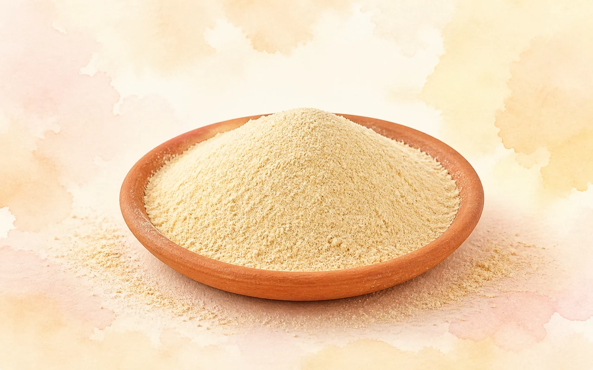
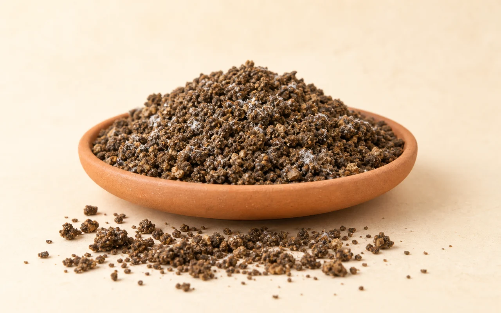
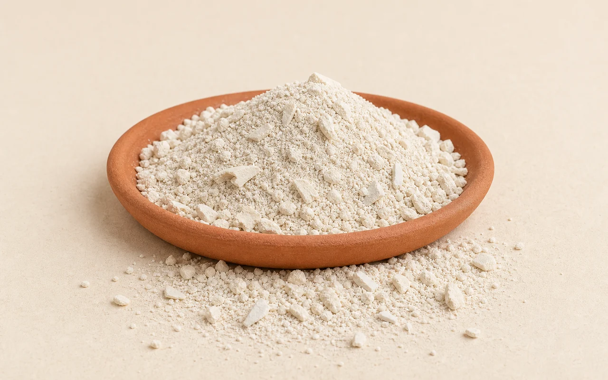
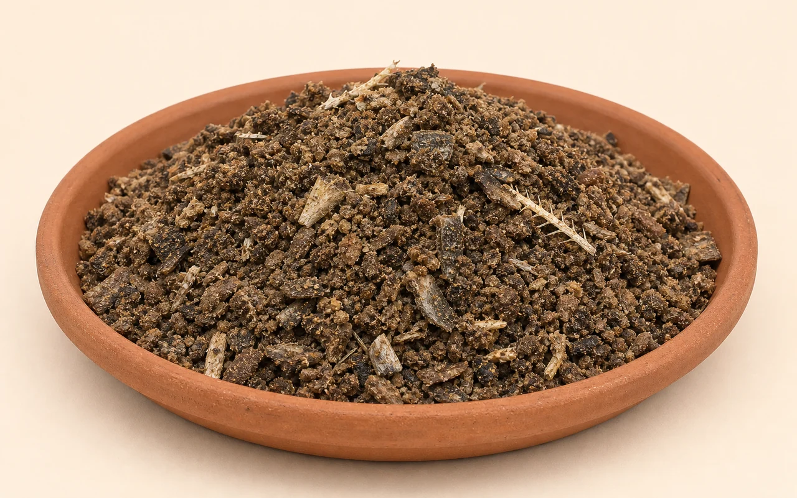
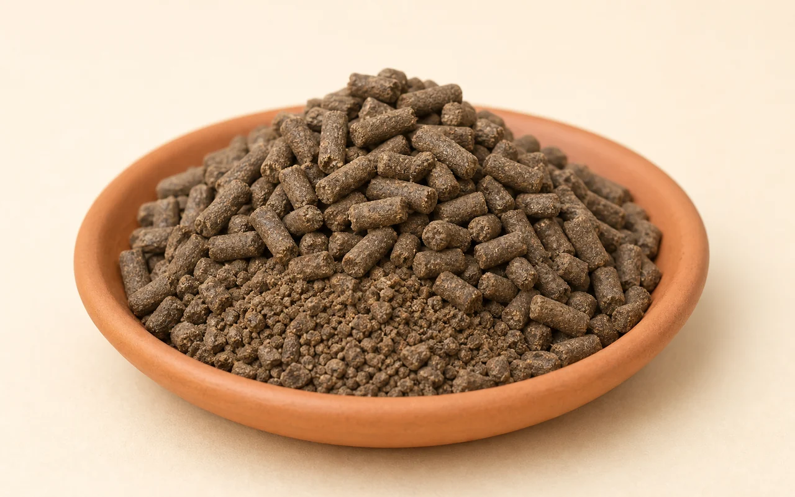
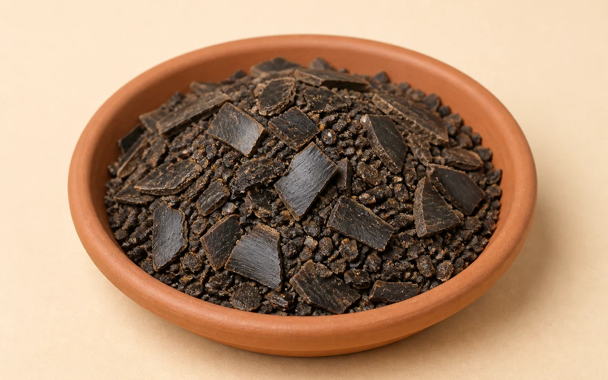
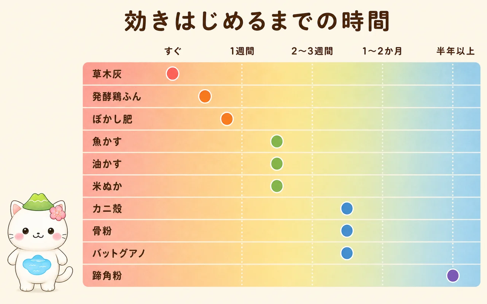

有機肥料の種類と使い分け
油かす、骨粉、魚かす、米ぬか、草木灰——袋の名前は知っていても、どれが何に効くのかはわかりにくいものです。有機肥料は化成肥料と違い、「何が多く入っているか」と「いつ効きはじめるか」が資材ごとにまるで違います。ここを押さえると、選ぶのも、まくタイミングを決めるのも、ぐっと簡単になります。代表的な10種類を、成分・効き方・使い方・注意点で整理しました。

- 微生物が分解してから効く：まいてすぐには効きません。効きはじめるまでの時間差が、資材ごとの一番の個性です。
- ゆっくり長く効く：じわじわ溶けるので肥料やけしにくく、効果も長続きします。
- 土そのものが良くなる：エサをもらった微生物が増え、団粒構造が育ちます。これは化成肥料にはない働きです。
いっぽうで、効くまでに時間がかかる、成分量が製品ごとにばらつく、においや虫が出ることがあるという弱点もあります。「化成肥料より優しいから安心」ではなく、性格が違う道具として使い分けるのが正解です。
🧭 成分で選ぶ
有機肥料でいちばん大事な分かれ道が、チッソ型・リン酸型・カリ型のどれかということ。葉を茂らせたいのか、花や実をつけたいのか、株を丈夫にしたいのかで、選ぶ袋が変わります。

| 資材 | チッソ | リン酸 | カリ | 効きはじめ | ひとこと |
|---|---|---|---|---|---|
| 油かす | 5〜7 | 1〜2 | 1〜2 | 2〜3週間 | 有機のチッソ肥料の代表 |
| 米ぬか | 2 | 4〜6 | 1 | 2〜3週間 | 微生物を増やす発酵の主役 |
| 草木灰 | — | 3〜4 | 7〜8 | すぐ | 唯一の速効性カリ肥料 |
| ぼかし肥 | 5 | 4 | 1 | 1週間 | 発酵済みで扱いやすい万能型 |
| 骨粉 | 4 | 17〜20 | — | 1〜2か月 | リン酸の王様。花と実に |
| 魚かす | 7〜8 | 5〜6 | 1以下 | 2〜3週間 | 味がよくなると言われる |
| 発酵鶏ふん | 3〜4 | 5〜6 | 2〜3 | すぐ〜1週間 | 安くて速効。有機なのに追肥可 |
| 蹄角粉 | 10〜13 | 1〜2 | — | 半年以上 | いちばん遅く、いちばん長い |
| バットグアノ | 1〜2 | 15〜25 | — | 1〜2か月 | コウモリの糞が化石化したもの |
| カニ殻・エビ殻 | 4〜5 | 2〜3 | — | 1〜2か月 | 肥料というより土壌改良・病害対策 |
※数字はおおよその目安（％）です。有機肥料は原料と製法で成分が変わるため、実際の値は袋の保証成分量を確認してください。数字の読み方は 肥料の基本 にまとめています。
🌿 植物性の有機肥料
植物由来のもの。においが穏やかで扱いやすく、住宅地の庭やベランダでも使いやすいのが利点です。動物性にくらべると効きはややゆるやかです。

油かす
菜種などから油を搾ったあとの残り。有機のチッソ肥料の代表格。まいてすぐ植えないのがコツ。

米ぬか
玄米を精米したときに出る粉。肥料としてより微生物のエサとしての力が大きい。

草木灰
草木を燃やした灰。有機肥料では珍しい速効性のカリ肥料。アルカリ性なので量に注意。

ぼかし肥
米ぬかや油かすをあらかじめ発酵させたもの。有機の弱点をほぼ消した万能型。
🐟 動物性の有機肥料
魚や骨、家畜由来のもの。成分が濃く、リン酸を多く含むものが多いのが特徴です。効きも植物性よりしっかりしていますが、においや虫の対策が必要になります。

骨粉
家畜の骨を蒸して砕いた粉。リン酸17〜20%と圧倒的。花木・果樹の元肥に。

魚かす（魚粉）
魚を煮て脂と水を抜いた粉。チッソとリン酸が両方多く、アミノ酸も豊富。

発酵鶏ふん
安価で速効性。有機肥料なのに追肥にも使える数少ない存在。石灰分が多いのが注意点。

蹄角粉
ひづめと角が原料。チッソ10〜13%を半年以上かけて放出する、最も遅効性の肥料。

バットグアノ
洞窟にたまったコウモリの糞が化石化したもの。リン酸型で、においがほぼない。

カニ殻・エビ殻
キチン質が放線菌を増やし、土の病気をおさえる。肥料というより土づくりの資材。
⏱ いつ効きはじめるか
有機肥料でいちばん失敗するのがタイミングです。「効かないから足す」をくり返して、あとから一気に効いて肥料過多——というのがよくある流れ。資材ごとの時間差を頭に入れておけば防げます。

- 元肥（植え付け前）：油かす・骨粉・魚かす・蹄角粉・グアノ。植え付けの2〜3週間前に土に混ぜ、なじませてから植える。
- 寒肥（冬の庭木・果樹）：油かす＋骨粉が定番。1〜2月に埋めておくと、分解が進んだころにちょうど春の芽出しに間に合う。
- 追肥（育っている最中）：発酵鶏ふん・ぼかし肥・草木灰なら使える。生の油かすや米ぬかを追肥にするのは避ける。
- 土づくり：米ぬか・カニ殻。栄養を足すというより、微生物を増やすのが目的。
⚠️ 有機肥料の落とし穴
「有機だから安全」ではありません。むしろ化成肥料より扱いに気を使う場面があります。次の4つは知っておいてください。
- ガス障害：分解のときアンモニアなどのガスが出て、根や葉を傷める。まいてすぐ植えると起きやすい。
- 発酵熱：未発酵のものは分解時に高温になり、根を焼く。
- チッソ飢餓：米ぬかなど分解しやすいものを大量に入れると、微生物が土のチッソを先に使ってしまい、一時的に植物がチッソ不足になる。
- 虫とにおい：土の表面にまくとコバエやナメクジが寄る。動物性は特に。
- 土にしっかり混ぜ込む。表面に置きっぱなしにしない。
- 植え付けの2〜3週間前に施し、分解が落ち着くのを待つ。
- 根に直接ふれさせない。植え穴の底に入れるなら土を1枚かぶせる。
- 迷ったら「発酵済み」を買う。ぼかし肥や発酵鶏ふんなら、これらの問題はほぼ起きません。

ぜんぶそろえる必要はぜんぜんないよ。家庭菜園や庭なら、まずは「油かす」と「骨粉」の2つ——チッソ型とリン酸型を1つずつ持っておけば、たいていのことはできるの。実際、昔から「油かす7・骨粉3」で混ぜた寒肥が庭木の定番なんだ。物足りなくなってから、草木灰やぼかし肥を足していけばいいからね。